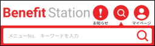
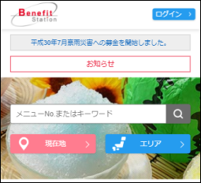
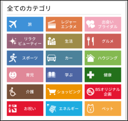
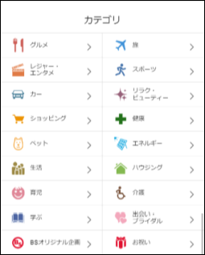
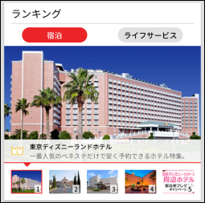
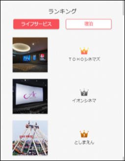
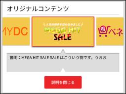
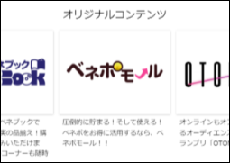
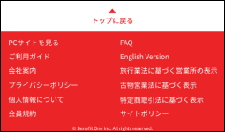
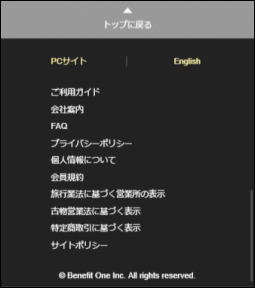

THE PROCESS
Challenges
1. Limited time frame - I only had five weeks to submit a proposal so I had to work efficiently.
2. One man army - I would have to make all the design decisions, but also communicate them to the rest of the Media Group and explain my thought process.
3. Inability to conduct detailed research - I was not able to conduct exhaustive research with real users outside of the company because it would be too time consuming and outside of my project scope.
Defining the User's Goal
By defining the user’s goal in the beginning, it helped focus my attention to find parts of the page that were preventing or slowing the user from achieving it, and also allowed me to check whether my design solutions were actually helping them achieve it. I concluded that the user’s goal when viewing a homepage is to:
Decide and navigate to the page they want to see.
The purpose of a homepage is to redirect the user to the content they actually want to see. Like a lobby in a hotel, it’s the first place you arrive to, but your final destination is your room. My task was to design as the receptionist and help the user find the page they wanted to see.
Identifying Problems
I approached the redesign process by finding problems in three ways:
- With the user’s goal in mind
- Taking on the perspective of a new user
- Using my own judgement based on prior experiences and knowledge in good UX/UI design
Identified Problems
Most of the problems were uncovered in the beginning of the redesigning process, but some were revealed later after further discussion, brainstorming, and testing.
- Some elements did not belong on the homepage
- Lacked a logical ordering of the content
- Untidiness of some elements
- Unfriendly to new-users who are not familiar with pictures and wording
- Overall aesthetic
Improving the Process
I initially began my process by wireframing and presenting the results. However, I wanted more feedback based on direct interaction with my designs, so I created functional prototypes in Origami Studio. I then conducted light user testing on company employees (who are also real users) and recorded their responses. By the end of the internship I developed the process of designing, prototyping, light testing and presenting my progress. With each iteration of the process, I improved my design by constantly checking to see if I was designing to help the user achieve their goal.
1st Iteration:
Wireframing > Medium Fidelity Mockup > Present
The first iteration was the most difficult. I wasn’t sure if I was making the right decisions and was actually improving the design. However, I quickly learned that your first design doesn’t need to be amazing. There’s no way you’re going to nail it on the first try, so just put something out and find where you can improve on it. My main focus for this iteration was to tackle some of the problems by removing unnecessary elements, organizing the content logically, tidying up the page by using equal spacing between elements, and using a different red color that improved the theme.
2nd Iteration:
High Fidelity Mockup > Present > Prototype > User Test
In the second iteration, I incorporated user testing once I realized that I didn’t have to do exhaustive testing, and could instead conduct very simple and light testing to yield real results. I also detailed my designs and created highly interactive prototypes to create a realistic experience. I improved on the last iteration by making collapsible elements, most notably the collapsible descriptions, which helped users understand what they were looking at.
3rd Iteration:
High Fidelity Mockup > Prototype > User Test
In this iteration, my main focus was to increase the readability and recognizability of icons and buttons. Some elements, most notably in the top bar and navigation bar of the page, went completely unnoticed. However, after conducting light user testing, I discovered that I did not make them stand out enough, and had to redesign them again in the next iteration.
4th Iteration:
High Fidelity Mockup > Prototype > Present
In the final iteration, I took all the feedback I received from user testing and implemented it into my designs. It actually, backtracked some things to the original page design (like all categories listed and a separate area/region search). I decided not to do another user testing session because I was running out of time and would not be able to implement any more changes. Instead, I spent the time preparing for my two final presentations; to the Media Group, and my PASONA International Exchange Conclusion Event.
Result
Final Prototype
Design Specifications
Checking back on the mobile website a year later, I saw that many of the design decisions I proposed were implemented.
|  | Logical ordering by placing search bar at the top |  |
 |
Dots signifying item number | |
|  | Multi-column categories to reduce height span |  |
|  | Togglable rankings to reduce height span |  |
|  | Descriptions to improve learnability for new users |  |
|  | Return to top button to improve usability and other links consolidated at the bottom |  |
Lessons Learned
Crummy First Draft
I learned that your first draft is never going to be perfect, and it shouldn’t try to be. Especially when it comes to design, since the process is iterative, you’re going to be making improvements on it again and again so there’s no need to worry about getting things right the first time. Just make something so you get things moving and have somewhere to build off from.
Establish user goals early in the process
I was always told that goal forming was important to complete at the beginning of the design process, and this redesign project proved it to me. Establishing a goal in the beginning allowed me to center my entire design around trying to help them achieve it. It allowed me to relentlessly design for the user and resulted in a design that actually improved the experience.